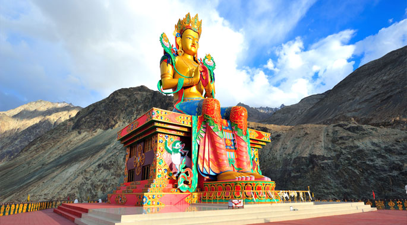

 Monasteries in Ladakh are much more than religious centers. Located in heaven that Ladakh is, these famous monasteries are purifying havens where one can find inner peace. Include them in the itinerary as you plan a trip to Leh Ladakh to enjoy the splendid and spectacular topographical medley comprising snow-capped mountains, sprawling cold deserts, sparkling lakes, surreal glaciers, and serene mountain passes.
Ladakh has a surreal beauty that allures and fascinates everyone. Ladakh has an amazing history and sparkling heritage too. The monasteries in Ladakh, India are breath-taking and enchanting structures that still hold the Buddhist heritage alive and fresh.
Founded in th 11th century, Lamayuru is one of the oldest and largest Buddhist monasteries in Ladakh. The monastery is located on Steep Mountain; the monastery is renowned as ‘Tharpa Ling’ which translates to the ‘place of freedom’.
Every 5th month of the Tibetan Lunar Calendar, a holy mask dance is performed by the monks inside the monastery which is a great spectacle. In the past, Lamayuru has housed up to 400 lamas, but presently there are only 30 to 50 lamas living here, although about 150 lamas belong to the gompa. In the 16th century, Ladakh's King Jamyang Namgyal was cured of leprosy by a lama from Tibet. In gratitude, the King gave Lamayuru gompa to this lama and also bestowed other privileges - no taxes were collected and the area surrounding the gompa was declared a sanctuary where none could be arrested. For this reason, Ladakhis still refer to Lamayuru gompa as Tharpa Ling, the "Place of Freedom"
Located in the beautiful Nubra Valley– Diskit is one of the most beautiful and the oldest Buddhist monasteries in Ladakh, founded in 14th century by Changzem Tsera Zangpo. It belongs to the Gelugpa sect (Yellow Hat) of Tibetan Buddhism and has various Buddha statues, images of other guardian Gods, and a huge drum.
With more than hundred monks inside, this monastery is a living place to enjoy the culture and religion of the land. Diskit monastery’s morning prayer ceremony takes about 45 minutes through a long row of scattered chortens to reach the gompa which is set on the highest point near the village. Belonging to the Gelugpa (yellow hat) sect, parts of the gompa, which houses 120 resident monks, are about 760 years old. The Dukhang has many statues, one of which holds the head and left arm of a Turkish invader believed to be 500 years old.
Stok gompa is a subsidiary of Spitok and both were founded by the same lama, Nawang Lotus, during the reign of King Takpa Bumlde. Stok belongs to the yellow-hat sect of Buddhism and currently has about 20 lamas living there. The oldest parts of the gompa are some 550 years old though the main Dukhang is only about 50 years old.
The entrance wall on either side of the door depicts various guardian divinities. On the left side wall the central image is of Vajrapani (Vajra-In-Hand), while the image on the left is that of Avalokitesvara in his four-armed manifestation. Avalokitesvara is also known as the "Lord of All He Surveys" and is believed to be reincarnated in the Dalai Lama.